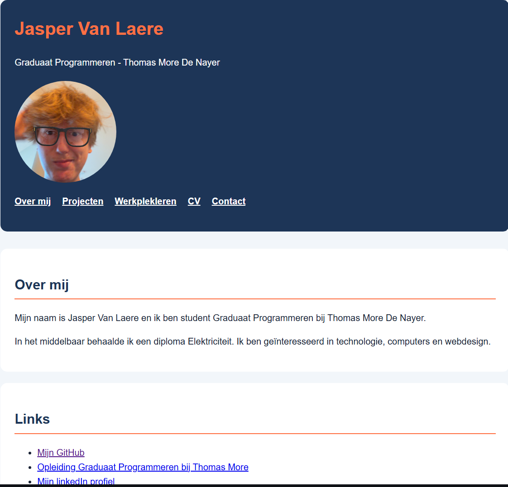

Beschrijving
Voor dit project maakte ik een persoonlijke portfolio website voor mijn opleiding Graduaat Programmeren bij Thomas More. De website toont wie ik ben, welke opleiding ik volg en aan welke projecten ik werk.
Mijn resultaat

De website bestaat uit meerdere pagina's met een vaste navigatie en een herkenbare visuele stijl. Ik gebruikte donkerblauw, oranje, wit en lichtgrijs als hoofdkleuren.
Evolutie
- Ik begon met een eenvoudige HTML-pagina.
- Daarna voegde ik meerdere pagina's en navigatie toe.
- Ik voegde mijn foto, projecten en externe links toe.
- Daarna werkte ik de CSS uit met kleuren, kaarten en witruimte.
- Tot slot controleerde ik de links en de mobiele weergave.
Wat heb ik geleerd?
Tijdens dit project leerde ik werken met semantische HTML, CSS-layouts, relatieve bestandsverwijzingen en een consistente navigatie. Ik leerde ook dat bestandsnamen en afbeeldingspaden exact moeten overeenkomen.
Gebruikte technologieën
- HTML
- CSS
- Visual Studio Code
- GitHub
Code
De broncode van dit project staat op GitHub:
Bekijk de code op GitHub